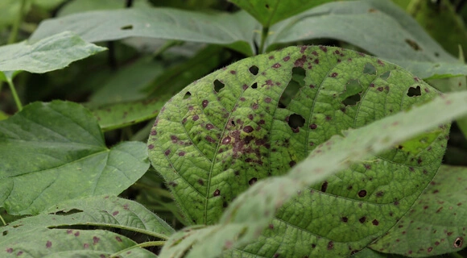
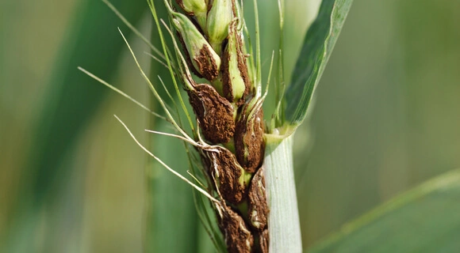
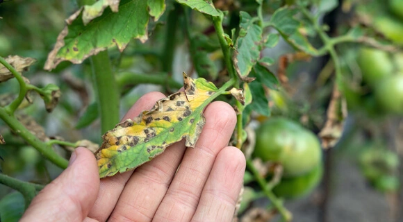
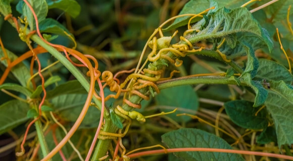

Crop Diseases: Types, Control, And Prevention
1. Crop Diseases Caused By Bacteria

Among the most common infections in agriculture are crop diseases caused by bacteria. In this regard, the prevention and control of this kind of disease are pretty tricky.
To infect the causal agent needs to get into theTo infect the causal agent needs to get into the culture’s tissue. It occurs mainly through damaged areas, such as caused by agricultural tools, insects (fleas), or simply unfavorable weather conditions (dust, wind, heavy rain). But bacteria can also infect plants through natural holes or glands (for example, which secrete nectar).
culture’s tissue. It occurs mainly through damaged areas, such as caused by agricultural tools, insects (fleas), or simply unfavorable weather conditions (dust, wind, heavy rain). But bacteria can also infect plants through natural holes or glands (for example, which secrete nectar).
Another feature of bacterial crop diseases is that causal agents, once in a plant or soil, can remain dormant for a long time until favorable conditions arise for them. First of all, significant temperature fluctuations and high levels of humidity act as catalysts for bacterial activity.
Symptoms Of Bacterial Crop Diseases
The main bacterial disease indications include vascular wilting, necrosis, soft rot and tumor.
Although this type of plant disease can be identified due to its pronounced symptoms, identifying a specific causal agent requires laboratory methods.
Common Bacterial Diseases
As noted earlier, due to a huge number of bacteria, there are many disease types. Here are some examples of the most common diseases of crop plants:
1. Granville wilt exposes itself in growth retardation, wilting of the high culture’s part, and the death of roots.
2. Fire blight symptoms include necrotic weeping ulcers, wilting and rolling of leaves, while the dried parts of a plant do not fall off.
3. Wildfire of tobacco is widespread in the world and shows itself as yellowish-green spots on leaves.
4. Blight of beans affects leafage with yellow-greenish spots, either localized or systemic. The discolored parts may turn necrotic.
5. Aster yellows can be noticed on most vegetables and weeds through malformations and chlorosis
Measures of Bacterial Disease Control
It is complicated to control bacterial diseases of crop plants for several reasons: high spreading rate and protection from exposure to chemicals due to being inside the plants. Preventive measures may include using pathogen-free seeds produced in drought-prone regions, hot water for seed treatment, soil solarization, control of plant diseases with germicidal compounds of seeds.
Also, crop diseases can be prevented by spraying. Of course, sanitary measures are imperative, which include weed control, sterilization of tools, proper waste disposal, and avoidance of cultivation under conditions when leaves are wet.
More Information : Click Me
2. Crop Diseases Caused By Fungi

Pathogenic fungi are the most typical agricultural problem. According to research, this plant disease type destroys about a third of all food crops every year. In this regard, this problem is severe both from a humanitarian and economic point of view. Like bacterial crop diseases, these infections affect plants mainly through wounds, stomata, and water pores. Also, fungal spores are often carried by gusts of wind.
Symptoms Of Fungal Crop Diseases
Often, a fungal infection is expressed in local or general necrosis. Also, crop diseases caused by fungi can interfere with the average growth or contribute to its abnormal burst, called hypertrophy. Other crop diseases symptoms include:
1. spots on leaves
2. rot
3. Anthraconse
4. ulcers
5. Curls of leaves and warts
Common Fungal Diseases
- Late blight of potato is expressed by dark green, purple or black lesions with white mold around the edges.
- Black stem rust of wheat is a dangerous disease that mainly affects cereals. It is expressed in the appearance of rust-colored sori on a plant.
- Symptoms of Coffee rust are powdery yellow-orange spots with a brown center on the lower part of leaves.
- Corn smut reveals abnormal formations of various sizes on different corn plant parts, including stalks, leaves, ears, and tassels.
- Loose smut typically affects grasses like barley, oats, or wheat and is diagnosed through atypical olive-green heads due to the presence of fungi spores.
- Powdery mildew looks like powder cover on plants (from trees to grasses) that are typically grey or white. First, the crop disease shows spots on leaves but spreads to larger areas as it develops.
- nthracnose of grape shows black round spots on foliage leading to its chlorosis and falling. Anthracnose of grape can also damage stems and fruits.
Fungal Disease Management
Preventive measures to check crop plant diseases caused by fungi are pretty varied. Key management actions include destroying plant matter containing dangerous fungi, using healthy seeds, regular crop rotation, chemical, and biological fungicides.
More Information : Click Me
3. Crop Diseases caused by Nematodes

Nematodes are parasitizing plants roundworms, which usually cannot be seen without special equipment.
1. yellowing
2. growth retardation
3. lack of response to fertilizers and water
4. the gradual general decline of a plant
5. reduction or even destruction of root systems.
Common Nematode Diseases
- Fusiform thickening of the stems is provoked by stem worms. The disease is expressed in the deformation of leaves, swelling of petioles, and the appearance of dark spots on tubers.
- Aphelenchoides, a disease of rice, is provoked by Aphelenchoides besseyi. Disease marks are blemishes on the tops of leaves, lack of grains, and culture depletion.
- Tylenchulus semipenetrans cause serious citrus diseases. It is characterized by the gradual death of not only leaves but also branches.
- Root-knot nematodes cause swelling-like malformations on roots of more than 2000 host species including fruit trees, strawberries, vegetables, or cotton.
- Root-lesion nematodes destroy plant roots. These pests are often an indirect cause of root rots because the lesions they make are a favorable environment for pathogenic fungi and bacteria.
Nematode disease management
Parasite control involves a wide range of activities. In particular, crop rotation, improving crop disease resistance, and soil treatment with appropriate fumigants with nematicides are effective measures. You can also destroy nematodes and their eggs with hot water (about 50°C/120°F).
Control Of Nematode Diseases
Parasite control involves a wide range of activities. In particular, crop rotation, improving crop disease resistance, and soil treatment with appropriate fumigants with nematicides are effective measures. You can also destroy nematodes and their eggs with hot water (about 50°C/120°F). However, this method of controlling crop diseases requires accuracy. You should adjust the watering time according to the temperature to not harm the plants themselves. Measures that promote plant growth are practical against individual nematodes: heavy mulch, fertigation, watering in drought, and summer and autumn fallow.
More Information : Click Me
4. Crop Diseases Caused By Virus
Symptoms Of Viral Crop Diseases
The symptoms of crop diseases caused by virus are usually divided into four types:
-
malformations, such as abnormal growth of shoots, distortion of leaves and flowers;
- necrosis, wilting and the appearance of annular stripes and spots;
-
dwarfism, growth retardation of both individual parts and the whole plant;
- discoloration, e.g. yellowing, and vein clearing.
Root crop diseases, which are expressed in their rotting, are a characteristic indication of the presence of a virus. However, some plants may not show symptoms and are latent carriers of a disease. Therefore, extreme vigilance is required in the fight against this infection type.
Common Viral Diseases
- Tobacco mosaic manifests in dwarfism and mosaic-like patterns on leaves. The disease is widespread throughout the world and can have significant economic consequences.
- Tomato spotted wilt is accompanied by the appearance and growth of necrotic yellow rings that gradually turn reddish-brown.
-
Potato spindle tuber inhibits plant growth, tubers become fusiform and shrink.
-
Cucumber mosaic virus produces mosaic dots and discolorations, malformations and distortions on fruits, narrow younger leaves, round spots, and causes general stunted growth.
-
Barley yellow dwarf is a cereal crop disease that is also dangerous to growing wheat. The symptoms include pale green leaves, chlorosis, poor tillering and flowering, smaller grains, and reduced yields.
- Prunus necrotic ring spot virus produces round dots on the leaves of plums, apricots, peaches, nectarines and other trees of the Prunus family. Early signs are yellowish and brownish leaves while at severe stages, the symptoms include foliage holes and premature dropping.
Control Of Crop Diseases Caused By Viruses
Unlike previous infections, most vegetable crop disease caused by viruses is extremely difficult to defeat, often impossible. Therefore, control, in this case, should be as effective as possible. Among the most common measures is the cultivation of resistant crops, indexing, determining the absence or virus presence that is not mechanically transmitted. The plant under study is grafted onto an indicator plant, which develops corresponding symptoms in the virus presence. Unfortunately, sometimes it is necessary to destroy infected cultures, and if large agricultural areas are affected, even to introduce quarantine to save the rest of the crop yield.
More Information : Click Me
5. Crop Diseases Caused By Parasitic Plants
div>

Parasitic plants are among the most dangerous plant pests in the world. With the help of particular organs, these plants settle in a host plant and satisfy at the expense of it (most often its vascular system). Although many parasites only weaken their “prey”, some can kill a plant and pose a severe economic threat to agriculture. Depending on the species, parasites can attach from one to several dozen plant species.
More Information : Click Me